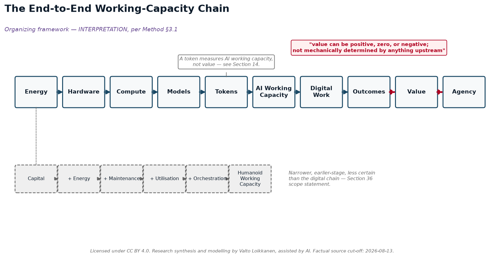
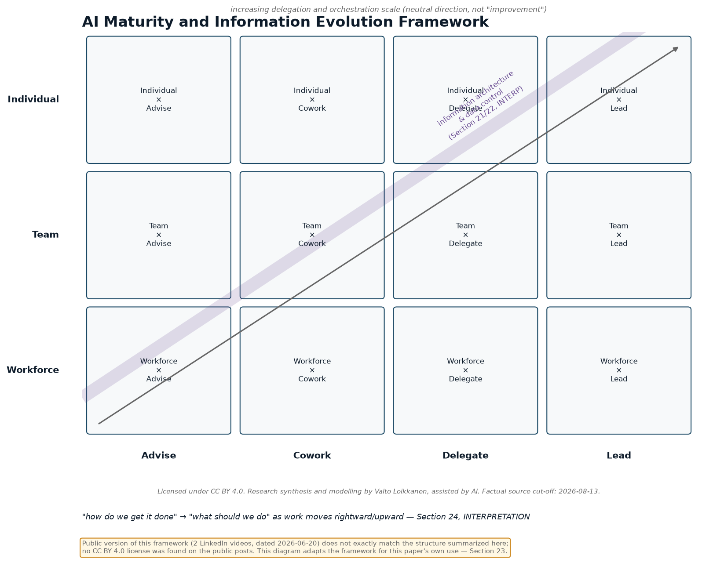
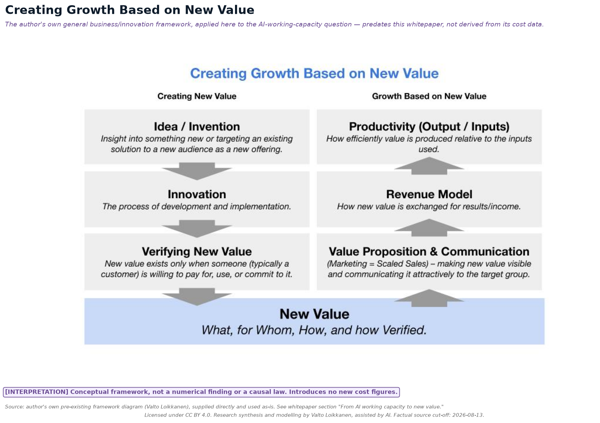

Kaikki 11 kaaviota tutkimuspaketista, järjestyksessä. Täydet rakenteelliset spesifikaatiot (mitä joka kaavio näyttää, näyttöluokkamerkinnät ja suunnittelusäännöt) löytyvät Visuaalisten resurssien briiffeistä.

Kaavio 1 — Päästä-päähän-työkapasiteettiketju. Jäsentävä viitekehys, TULKINTA Menetelmä §3.1:n mukaisesti.Kaavio 2 — Energiasta tokeniin -pino ja kustannusvesiputous. Laskettu EUR-esimerkki, Osio 15.Kaavio 3 — Tokenista työkapasiteetti-intensiteettitikapuuhun. Käyttöintensiteettivyöhykkeet ja tasojenvälinen kustannusmatriisi, Osiot 16-17.Kaavio 4 — Ihmisen ja tekoälyn työn arvokertoimet. Kyvykkyys ≠ tehtäväsopivuus ≠ arvo, Osiot 18-19.

Kaavio 5 — Tekoälyn kypsyyden ja tiedon kehityksen kehys. Kirjoittajan oma mukautettu kehys, Osio 23, TULKINTA.Kaavio 6 — Omistusrakenne ja vaihtoehtoiset arkkitehtuurit. Osiot 26-27/30.Kaavio 7 — Sähköverkko-/aurinko-/osuustoiminta-analogia. Osio 28, TULKINTA.Kaavio 8 — Mittakaavaspektri: Kotitalous → Osuustoiminnallinen → Ammattimainen → Hyperskaala. Osio 35.
Kaavio 10 — Viimeinen siirtymä: Runsas työkapasiteetti → "Mitä meidän pitäisi tehdä?" Osiot 43-45.

Kaavio 11 — Kasvun luominen uuden arvon pohjalta. Kirjoittajan oma ennalta olemassa oleva kehyskaavio, toimitettu ja käytetty sellaisenaan; katso alkutekstin "Tekoälytyökapasiteetista uuteen arvoon" -osio alkutekstissä.